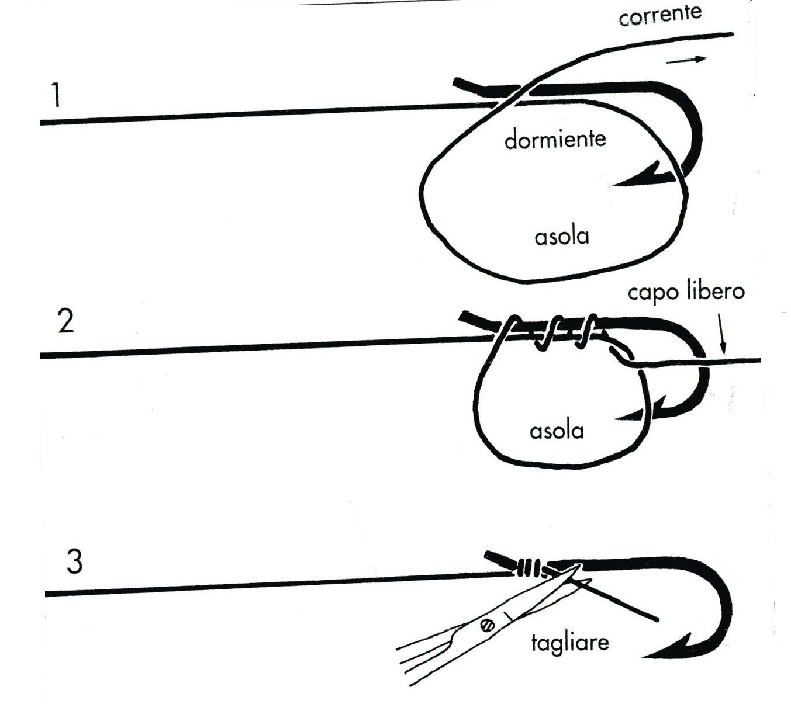
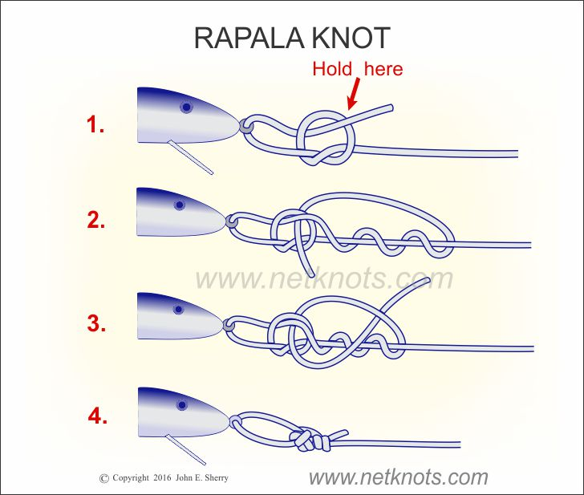
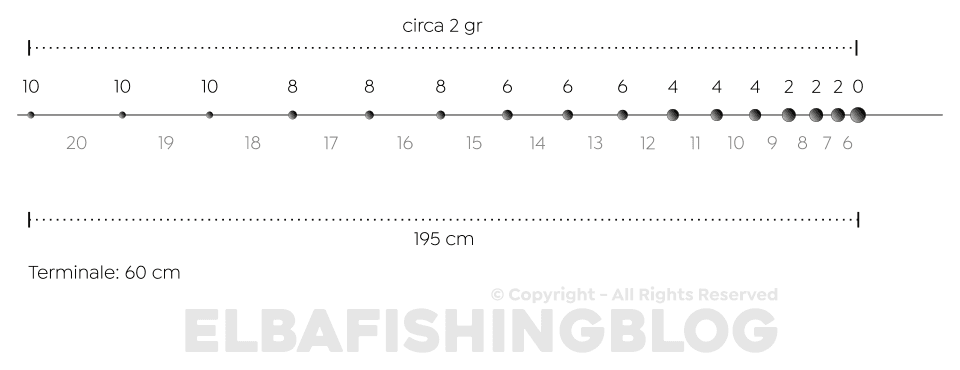
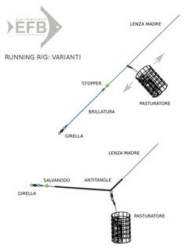
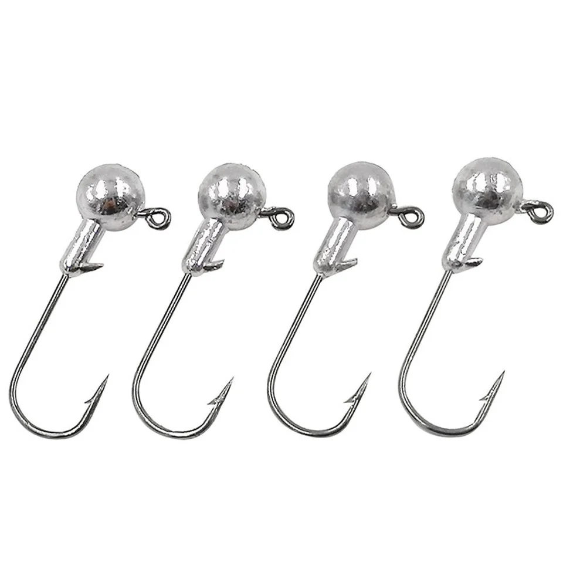
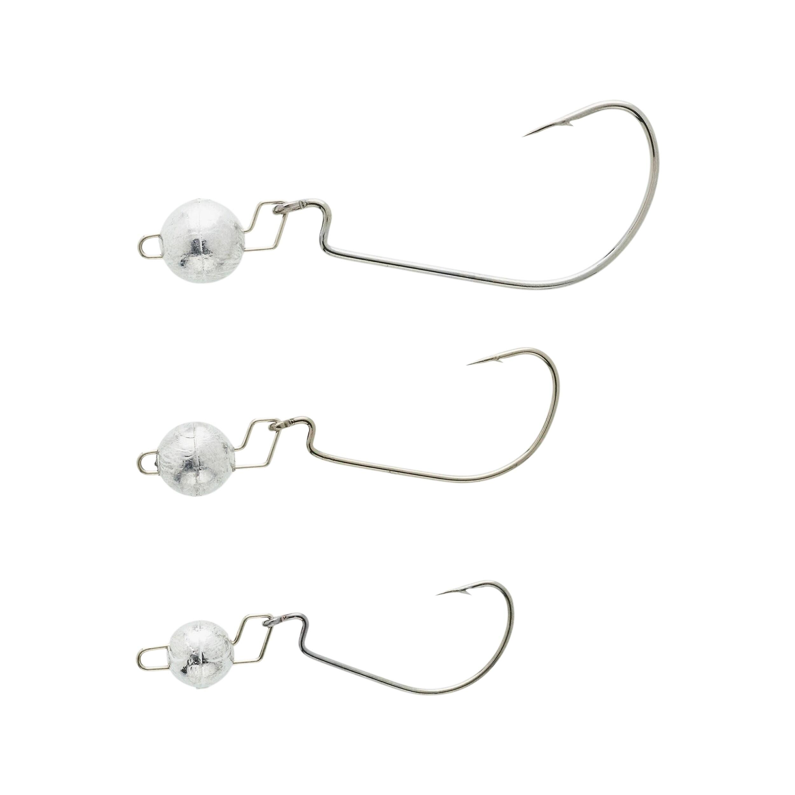
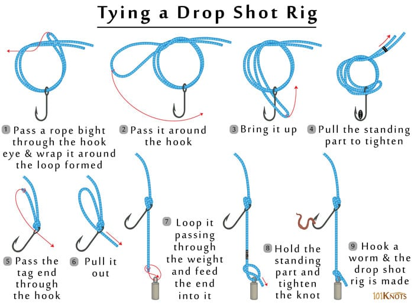

Rig Lab
Schema Vettoriale Lenza
Enciclopedia del Pescatore
Il più robusto per ami con occhiello e moschettoni. Mantiene oltre il 95% del carico.

Molto resistente e facile da realizzare anche con fili capillari su ami senza occhiello.

Ideale per legature veloci su occhielli, moschettoni ed esche artificiali.

Zero spessore, perfetto per passare negli anelli della canna da spinning o feeder.

Ottima alternativa rapida all'FG quando si è in pesca e c'è poco tempo.

Asola non scorrevole che lascia l'artificiale (minnow) libero di muoversi.

Piombi decrescenti dal grande (in alto) al piccolo (in basso), distanziati.

Piombi raggruppati a formare un "bulk", seguiti da 2-3 piombini piccoli di segnalazione.

Serie di 25-35 piombini sferici spaccati concentrati in 40-60 cm.

Indispensabile quando la profondità dell'acqua supera la lunghezza della canna.

Il pesce mangia senza percepire la resistenza del pasturatore.

Pasturatore posizionato su un bracciolo laterale a perdere, terminale in asse.

Pasturatore piatto con terminale cortissimo (8-10 cm) annegato nella pastura.

L'innesco fondamentale: amo piombato dritto sulla schiena del silicone.

Piombo a proiettile scorrevole e amo offset nascosto nell'esca.

Amo a 90° sul trave con nodo Palomar e piombo finale a sgancio rapido.

Il Catch & Release garantisce il futuro delle nostre acque:
| Misura PE | Diametro (mm) | Libbre (lb) | Carico (kg) |
|---|---|---|---|
| #0.6 | 0.128 mm | 8 lb | ~3.6 kg |
| #0.8 | 0.148 mm | 12 lb | ~5.4 kg |
| #1.0 | 0.165 mm | 16 lb | ~7.2 kg |
| #1.5 | 0.205 mm | 24 lb | ~10.8 kg |
| #2.0 | 0.235 mm | 30 lb | ~13.6 kg |
| #3.0 | 0.285 mm | 40 lb | ~18.1 kg |
| Specie Target | Misura Minima | Periodo Frega (Generico) |
|---|---|---|
| Trota Fario | 22-25 cm | 1Ott - 1Feb |
| Luccio | 50-60 cm | 1Feb - 31Mar |
| Black Bass | 30 cm | 1Apr - 31Mag (C&R) |
| Barbo / Cavedano | N.D. / 20cm | 1Mag - 30Giu |
| Spigola (Mare) | 25 cm | Nessun divieto fisso |